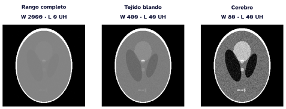
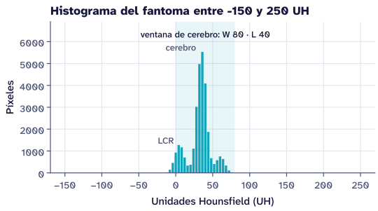

La imagen como dato
Muestreo, cuantización, unidades y ventana
Qué guarda cada píxel, cómo se pasa a unidades Hounsfield y por qué la ventana cambia lo que vemos pero no el dato.
Representación
Una imagen es una función muestreada
Una imagen continua \(f(x, y)\) se convierte en una matriz al muestrear el espacio y cuantizar la intensidad.
- El tamaño del píxel (
PixelSpacing, en mm) fija la resolución espacial- con él, las distancias se miden en milímetros y no en píxeles
- La cuantización fija el rango dinámico: 12 bits dan 4096 niveles
- En TC cada píxel se lleva a unidades Hounsfield (UH)
Del archivo a las unidades físicas
El archivo DICOM guarda enteros; la conversión está en el encabezado:
\[ \text{UH} = \text{valor} \times \texttt{RescaleSlope} + \texttt{RescaleIntercept} \]
| Tejido | UH aproximadas |
|---|---|
| Aire | −1000 |
| Agua | 0 |
| Cerebro | 30 a 45 |
| Hueso cortical | 700 a más de 1000 |
Ventana y nivel
La pantalla muestra 256 grises. La ventana \(W\) y el nivel \(L\) eligen qué parte del rango se reparte en ellos:
\[ g = \min\!\Big(1, \max\!\big(0, \tfrac{\text{UH} - (L - W/2)}{W}\big)\Big) \]
- Lo que queda por debajo de \(L - W/2\) se ve negro; lo que pasa de \(L + W/2\), blanco
- Una ventana estrecha separa tejidos parecidos
Tres ventanas, el mismo dato

En NumPy
import numpy as np
def ventana(uh, ancho, nivel):
"""Lleva el rango de la ventana a [0, 1]."""
return np.clip((uh - (nivel - ancho / 2)) / ancho, 0, 1)
cerebro = ventana(uh, ancho=80, nivel=40)Histograma
El histograma cuenta píxeles

Para esta semana
NotaLaboratorio 1
Calcular el histograma del fantoma, elegir una ventana para cada estructura y justificarla con el histograma.
- Leer el capítulo 3 de Gonzalez y Woods
- Instalar el entorno con
uv(ver el tutorial del sitio)